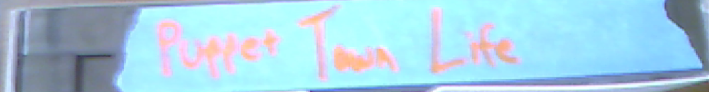
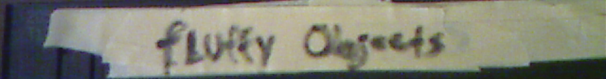
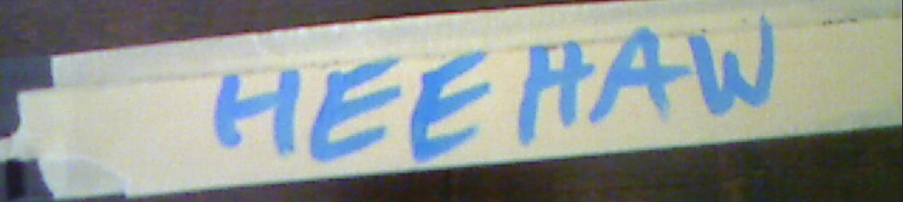

KayıpKasetler.0021
'Zihin Gördüğünü Artık Göremez Olamaz.'

İnek Fabrikası - 2010, 1 saat 22 dakika
İnsanlarla evcil sığırların yer değiştirdiği; insanların fabrika çiftliklerinde ve süt çiftliklerinde ineklere uygulanan muamelenin aynısına maruz kaldığı hayalî bir dünyayı anlatan kurgu film. Müstehcenlik yasaları ile et ve süt lobisinin itirazları nedeniyle yasaklandı.

Kukla Kasabasında Yaşam - 1991, 27 dakika
Zor meslekleri öğrenmek için gerçek dünyadaki yerlere maceralara çıkan kukla karakterleri anlatan, hiç yayımlanmamış çocuk programı pilot bölümü. Kuklalar bir kanalizasyon bakım teknisyeniyle röportaj yaparken yanlışlıkla ölü bir ölü beden görüntülenince proje rafa kaldırıldı.

Arcana: Son Element - 2018, 2 saat 2 dakika
Eski A sınıfı oyuncularından, yönetmeninden ve yöneticilerinden bazıları ilgisiz suçlarla itham edilip tartışmaların odağına düşünce daha başlangıç çizgisini geçemeyen, milyonlarca dolarlık ve daha önce hiç görülmemiş modern fantastik film. Yapımına dair tüm izler silindi. Hollywood'daki özel bağlantılar aracılığıyla edinildi.

Tüylü Nesneler - 2016, 52 dakika
Bir öğrenci grubunun birbirine giderek zorlaşan tahnit görevleri için meydan okuduğu kamera kaydı. Aşırı kan ve öldürücü iğnelerin uygunsuz kullanımı. Kaybedenler üzerinde ayrıntılı ve öğretici tahnit işlemleriyle sona eriyor. İsimsiz olarak gönderildi.

Anırış - 1988, 1 saat 33 dakika
Bir insan kadına âşık olan konuşan eşeği anlatan yetişkinlere özel film. Bariz nedenlerle tüm pazarlarda yasaklandı.

GüneşAltı - 1999, 1 saat 47 dakika
Sette yaşanan feci ve acayip bir kazada oyuncu ve ekip üyelerinin neredeyse tamamı elektrik yangınında öldüğü için kurgu aşamasına hiç ulaşamayan bilim kurgu filmi. Kayıt kesilmeden hemen önce yangın ve ölümler görülebiliyor.

Bakıcı - 1989, 1 saat 27 dakika
New England'daki bir akıl hastanesinde hastalara bakmak üzere çalıştırılan fakat gizlice onlara şiddet uygulayan gerçek bir kişiyi konu alan film. Filmin öznesinin hâlâ hayatta olduğu ortaya çıkıp yönetmene iftira davası açınca yasaklandı.

Uzuvsuz - 2007, 1 saat 49 dakika
Kurbanlarının ses tellerini, kollarını ve bacaklarını ameliyatla çıkarıp onları evcil yılanlar gibi dev bir teraryumda tutan psikopatı anlatan korku filmi. Rıza dışı ameliyatların açık görüntüleri ve gereksiz şiddet nedeniyle yasaklandı.